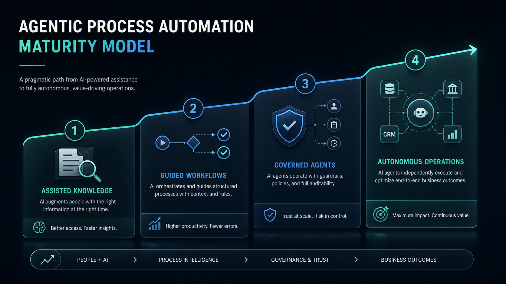

CTG-Informática Services
Put governed AI agents to work across real business processes.
We help organizations automate knowledge-intensive workflows with retrieval, decision support, human oversight, and production-grade traceability.
How it works
Agentic Process Automation uses AI agents to help complete business workflows that require information retrieval, rule checking, decisions, and coordination across systems. It is not just a chatbot: a chatbot answers a question; an agentic workflow helps move a process forward.
Capture requests, documents, tickets, or operational events.
Ground responses in approved knowledge, data, policies, and APIs.
Apply business rules, confidence thresholds, and escalation criteria.
Execute approved steps in enterprise systems with audit trails.
Maturity model
Most organizations should not start with full autonomy. We help identify the safest business step, prove value, and scale only when the process, controls, and people are ready.

AI retrieves and summarizes trusted internal information.
AI supports task execution with recommendations and next steps.
Specialized agents operate with policies, audit trails, and escalation rules.
Agents coordinate across systems under measurable controls and human oversight.
Business impact
The goal is not to add AI decoration to an existing workflow. The goal is to remove friction from work that depends on documents, policies, systems, and expert judgment.
Priority use cases
Agents classify requests, retrieve account or case context, recommend the next action, and escalate sensitive cases to people.
Document checks, policy compliance, routing decisions, and exception handling become faster without losing evidence or control.
Agents combine knowledge-base retrieval, service rules, and tool execution to reduce load on expert teams.
Policies, procedures, reports, and databases become operational assets that support daily decisions instead of passive repositories.
What we build
Connect approved documents, databases, and APIs so agents answer and act using your real organizational context.
Design specialized agents for intake, retrieval, reasoning, compliance checks, execution, and escalation.
Define policy guardrails, confidence thresholds, human-in-the-loop rules, logging, and audit evidence.
Connect with ERP, CRM, helpdesk, databases, and custom applications through secure interfaces.
Measure quality, failure modes, adoption, latency, and business outcomes after deployment.
Production readiness
High-risk or low-confidence cases are routed to people with the evidence needed to decide quickly.
Each recommendation or action keeps a trail of retrieved knowledge, applied rules, and execution results.
The solution improves the way people work instead of replacing organizational knowledge with a black box.
Delivery model
Select the process, success metrics, risk level, knowledge sources, and operational constraints.
Design the agent workflow, retrieval strategy, integrations, guardrails, and user interaction points.
Validate quality, cost, latency, user experience, and exception handling with real cases.
Harden, deploy, monitor, document, and transfer practices so the organization can evolve the system.
Engagement formats
Map candidate workflows, assess data readiness, estimate value, and choose a realistic first pilot.
Build a focused process automation solution and validate it with business users before scaling.
Define reusable patterns, governance, architecture, and internal skills for a broader automation portfolio.
Next step
Bring one process that is slow, document-heavy, policy-sensitive, or dependent on expert judgment. We can help decide whether agentic automation is the right tool.